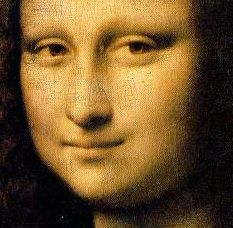
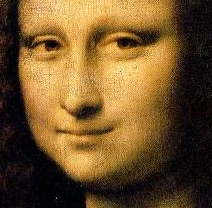
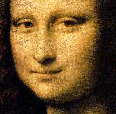

s
Grab
Terminator
Walter
Clooney
Bieber
Kim
Rihanna
Audrey Hepburn
Bill Murray
Sean Connery
Cage
The Queen
Obama
Chuck Norris
Mona Lisa
Picasso
Abstract (Scream)
Holger
Average face
Baron
Baron.1
Schafe
Schafe.1
Pegida
Pegida.1
Mashup
Mashup.1
Mashup.2
Ingo
Freiheit
Freiheit.1


 
